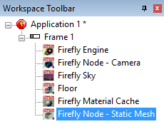
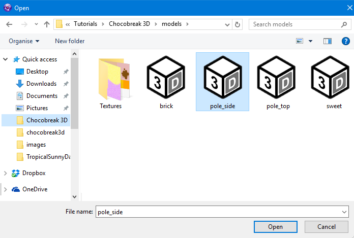
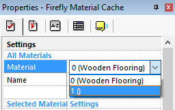
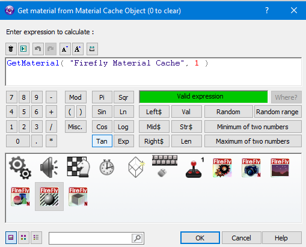

|
OK, we have a floor now its time to add some walls to stop the ball that we will be adding later from falling off the floor, now we could just do boring brick walls but thats boring, lets have some nice spinning poles. we could add more primitives like the tube primitive, but we need something a little special, so were gonna have to make our own. There are plenty of tutorials out there on basic modelling using blender or any other 3D mesh creation program, luckily for you there is a model already done. Firstly lets add a new Firefly Node - Static Mesh |
||
|  | ||
| like before we will have quite a few of these static meshs so lets rename this one Left Pole, right mouse the static mesh - choose rename and type the new name in. | ||
| Next we need to let Firefly know which model represents the left pole so click inside the property Mesh file and you will see a text area where you could type something like C:\mygame\pole.obj but its a lot easier if you click on the button at the end and choose the file from the window. | ||
|  | ||
| find the directory with models in and select pole_side, if we check the game now we would see: | ||
| The pole is black, hopefully you expected that as we havent placed a material on yet, the good thing about firefly is you can re-use things for example in our game we have 2 side poles a green one and a pink one. we only need 1 model of the pole though as we can just use a different materials on each of them. so go back to the Material Cache. | ||
| if you click on the Material List you can see that at the moment we only have the Wooden Flooring in the list in place 0, what we need to do is add another material to the cache, hit the New Material button and provided you didn't change any settings it would have created a new material, using the Material List again switch to the new material which should be number 1 | ||
|  | ||
| if you dont see a new material there, just click off of the Material Cache onto something like the Floor, then click back on the Material Cache again and click New Material, and it will now create a new one. | ||
| once you have a new material called 1 (), rename it to Green Pole. then just like before press 1st Texture find the 1st Texture line again and press the blue button and load up the Green candy stripe texture. | ||
| Don't forget to turn off the lighting option near the bottom as we dont want to see anymore black objects. | ||
 |
||
| Create 2 more materials and name them Red Pole and Pink Pole, load in the textures and turn off the lighting on both poles just like you did for the green pole. | ||
|
when your done you should have 4 materials matching the image above. Go back to the Event list using the icon at the top. Under the Left Pole icon and level with Start of Frame right click and choose Load Material just like we did for the floor |
||
| But this time we dont want material 0 becuase thats the floor we need material 1 which is the Green Pole. | ||
|  | ||
| Before we just dropped the material on the first slot 0 - however if we do that to this model we get. | ||
| so we know that for this model slot 0 is the golden ends of the pole and slot 1 is the middle section of the pole, so for question 2 enter slot 1. | ||
 |
||
| If we look at the game now we see the pole is green with black ends, but its in the wrong place and isnt turning like our pole should do. | ||